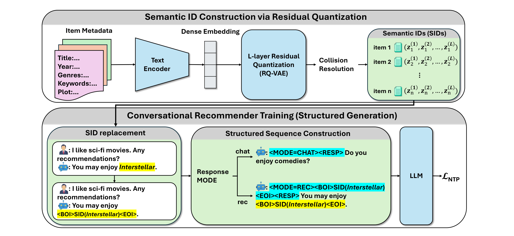
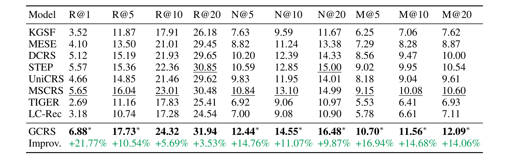
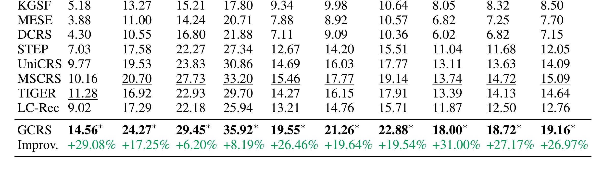
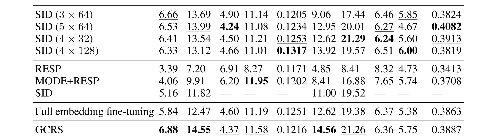

这里重写精读《Generative Conversational Recommender System》。论文入口：arXiv:2605.21987。作者 Sixiao Zhang、Mingrui Liu、Cheng Long 来自 Nanyang Technological University。PDF 给出 GitHub 线索，但本轮访问对应仓库返回 404，因此代码状态按“未核验到可用仓库”处理。本文核心是把对话推荐从外部检索加回复生成，改成统一自回归序列生成，同时用 semantic ID 和 constrained decoding 控制 item 合法性。
1. 背景和问题
对话推荐系统的难点在于它同时要做两件事：理解多轮对话中的用户偏好，并把推荐结果自然地嵌入回复。传统 CRS 通常采用模块化 pipeline：对话编码器把上下文变成 query representation，推荐模块在 item embedding space 中做 nearest-neighbor retrieval，生成模块再把 top-k item title 或占位符插入自然语言回复。这种设计工程上可控，但推荐和语言生成之间是松耦合的。推荐器优化的是 item ranking，生成器优化的是回复流畅度，二者之间没有共同的 next-token objective，也很难让语言模型在生成时真正“知道”协同过滤和 item 语义。 LLM 进入 CRS 后，很多工作尝试把大模型用作 reranker 或直接生成 item title。前者仍依赖外部 candidate generator，若候选集中没有正确 item，再强的 reranker 也无能为力；后者容易出现 hallucination，例如生成一个不存在、拼写错误或同名歧义的电影/商品标题。还有一种做法是给每个 item 一个唯一 token，但大规模 item catalog 会导致词表膨胀，新 item 加入时还需要修改词表或重新训练。GCRS 的出发点正是这三个矛盾：推荐和对话目标分裂、自然语言 title 不可靠、唯一 ID 不可扩展。 论文提出的方向是“完全生成式对话推荐”，但这个“生成式”并不是不受约束地输出文字，而是把 item 表示成由 RQ-VAE 学到的 semantic IDs，并把这些 ID 作为可生成 token 进入同一个 autoregressive sequence。模型先决定 response intent，再生成 recommendation target，最后生成自然语言 response。这样一来，推荐结果不再是后处理插入，而是回复生成过程中的显式中间决策；同时 constrained decoding 可以限制 SID 必须对应合法 item，避免不存在 item。 这篇论文值得重新写清楚，因为旧笔记只把它概括成“把对话推荐变成生成问题”，遗漏了两个关键点：第一，semantic ID 的作用不是给 item 换个名字，而是解决 title hallucination、词表规模和新 item 泛化；第二，structured generation 的作用不是格式美化，而是让 intent、target、response 形成依赖顺序。只有这两点同时成立，GCRS 才比“LLM 生成回复 + 外部推荐器”有本质差别。
对话推荐与普通序列推荐的差别在于，用户偏好不是只体现在 item history 中，还体现在自然语言中的否定、犹豫、解释和追问。用户可能说“不要太恐怖，但可以有悬疑”“我看过星际穿越，想要类似但节奏慢一点”，这些表达既包含 item reference，也包含高层属性。传统 pipeline 如果先把整个对话压成一个 embedding，再到 item space 里近邻搜索，会丢掉回复策略和推荐时机；如果让 LLM 只负责生成回复，又会让推荐目标依赖外部模块。 GCRS 的背景还涉及 semantic ID 这条生成式推荐路线。TIGER 等工作证明，用离散语义码生成 item 是可行方向，但它们主要服务序列推荐，不处理多轮对话中的 intent 和 response realization。GCRS 把这个思想移到 CRS：不仅生成 item ID，还生成对话模式和回复文本。这个迁移并不简单，因为 CRS 的输出既要命中 item，又要像自然对话；错误不仅可能是推荐错，也可能是推荐时机不合适、解释不一致或生成不存在 item。
补充背景：对话推荐的难点不是单纯“生成一句自然语言回复”，而是在对话过程中决定何时推荐、推荐哪个 item、怎样解释推荐。传统流水线通常把这三件事拆成意图识别、候选召回、回复生成，模块边界清晰但误差会级联。GCRS 的激进之处在于把 item target 也放进自回归序列，让 LLM 在同一条生成轨迹中处理 mode、semantic ID 和 response。它解决的是 LLM 自由生成 item 名称容易幻觉、外部检索又和语言生成割裂的问题。
2. 方法
2.1 Semantic ID construction：用 RQ-VAE 把 item 映射成离散语义码
GCRS 的第一步不是让 LLM 直接生成 item title，而是先为每个 item 构造 Semantic ID。论文使用 item metadata 经 text encoder 得到连续表示，再用 residual quantization / RQ-VAE 分解成多层离散 code。可以把 item 的语义码写成：
符号解释：$i$ 表示一个 catalog item；$c_{i,l}$ 是第 $l$ 层 codebook 中选出的离散码；$L$ 是语义码层数。较前层 code 通常表达粗粒度类别或主题，后续 code 补充残差信息。相比直接生成标题，Semantic ID 更容易被约束解码，也能降低 item 名称幻觉。
Collision resolution 是这个模块的关键工程问题。若多个 item 得到同一 SID，模型生成后无法唯一还原 item；若 codebook 太大，训练样本又会变稀疏。复现时应先检查 SID 唯一率、相似 item 的 code 邻近性、新 item 编码后的冲突率，再进入对话训练。

Figure 1 把 GCRS 的两个核心模块串在一起。上半部分是 Semantic ID construction：item metadata 先进入 text encoder，再经过 residual quantization 形成分层离散码；右侧绿色区域表示同一个 item 被映射成多个 code token，而不是直接让 LLM 记住电影标题或商品名称。下半部分是 conversational recommender training：对话历史、推荐模式 token、语义 ID 和最终 response 被拼成结构化序列，让模型在同一个自回归过程中完成“是否推荐、推荐哪个 item、如何解释推荐”三件事。
这张图对理解公式尤其关键。公式清单里的 $SID(i)$ 不是抽象符号，而是图中从 metadata 到 codebook 的可落地接口；$P(m_t, SID(i_t), r_t\mid D_{<t})$ 也不是普通生成概率，而是把 mode、target 和 response 绑定成一个可约束解码的序列。若只看自然语言描述，很容易把 GCRS 误解成“LLM 生成推荐回复”；看 Figure 1 后会发现它更像一个 catalog-aware generative recommender：LLM 负责对话和结构化生成，catalog service 负责 ID 合法性，RQ-VAE 负责把 item 压成可生成且可反查的语义码。
工程复现时，这张图还提示了几个必须拆开的检查点。Semantic ID construction 要单独检查 code 冲突、相似 item 聚类和新 item 编码；structured generation 要检查 mode token 是否在正确轮次出现；constrained decoding 要检查生成的 SID 是否一定能反查到可推荐 item。只有这三段都稳定，实验表里的 Recall 提升才有解释力。否则，推荐指标可能只是数据集 item churn 低带来的便利，无法说明方法能迁移到真实库存频繁变化的推荐系统。
2.2 Structured generation：mode、target、response 三段式生成
GCRS 把对话推荐统一成结构化自回归生成。给定历史对话 $D_{<t}$，模型生成系统回复 $u_t$，但回复不再只是自然语言，而是包含模式、目标 item 和自然语言解释。目标可以写成：
符号解释：$D_{<t}$ 是当前轮之前的对话历史；$m_t$ 是模式 token，例如推荐模式或聊天模式；$SID(i_t)$ 是被推荐 item 的语义码；$r_t$ 是最终自然语言回复。这个分解让系统能定位错误：mode 错是推荐时机问题，SID 错是 item target 问题，response 差是语言生成问题。
训练时，数据中的 item mention 被替换为 <BOI>SID<EOI>，并加入 <MODE=REC> 或 <MODE=CHAT>。推理时，模型先决定模式；若进入推荐模式，则通过 trie 或合法 SID 空间约束生成 item code，再把 code 解析为 catalog item，最后生成回复解释。这个结构化过程是 GCRS 相比普通 LLM reranker 的核心差异。
2.3 Constrained decoding 和 catalog 接口
Constrained decoding 解决的是可用性问题：LLM 不能随便编一个不存在的电影或商品。系统需要维护 catalog-to-SID 服务、合法 SID trie、SID-to-item 反查以及新 item 更新流程。新 item 上线时，metadata encoder 和 RQ-VAE 需要生成 code 并加入 trie；旧 item 下架时，对应 code 应从可生成空间移除或标记不可推荐。
这个接口也决定 GCRS 的适用边界。ReDial 和 Inspired 是电影推荐数据集，item churn 低、库存和价格约束弱；真实电商、短视频或广告场景中，item 动态变化更强，完全依赖 LLM 直接生成 item ID 风险更高。更现实的落地方式是把 GCRS 用于小 catalog、对话探索或候选补充，再和传统召回、重排、多目标约束结合。
2.4 训练风险和评估关注点
对话数据中的 item mention 不一定都是推荐目标，可能是用户历史、负反馈或比较对象。SID replacement 之前必须区分 mention 的语义角色，否则模型会学习在错误时机推荐错误 item。评估也不能只看 Recall：若推荐指标提升但回复模板化，用户体验仍然差；若 BLEU/PPL 好但 SID 错，推荐任务也失败。GCRS 的价值在于把 item prediction 和 response generation 放在同一序列里，但它也要求 item 表示、mode 决策和解码约束都稳定。
从方法复现角度看，GCRS 至少有四个容易被省略但会决定成败的细节。第一，Semantic ID 不是普通聚类标签，而是要支持生成、反查和增量更新的 catalog key；因此 codebook 训练、碰撞处理和下架 item 清理都应被记录。第二，mode token 必须和对话语义对齐，如果用户只是描述偏好但还没要求推荐，系统不应过早进入推荐模式。第三，SID 的合法性约束应在解码时执行，而不是生成后再过滤；生成后过滤会造成 beam search 中大量候选无效，最终回复可能退化成泛泛闲聊。第四，response generation 不能掩盖推荐错误：一个语言上流畅的回复，如果目标 item 错了，在 CRS 里仍然是失败样本。
把它迁移到真实推荐系统时，还要区分“生成 item ID”和“生成候选集合”。电影 CRS 的 catalog 相对稳定，用户也能接受系统显式谈论某个 item；电商、广告、短视频场景里，库存、价格、供给状态、合规规则和个性化约束更复杂。更稳的做法是让 GCRS 生成少量语义明确的候选或解释，再交给召回/重排链路做库存、风险和多目标约束。这样既保留了结构化生成的可解释性，也不把完整推荐链路压到 LLM 的自回归解码里。
因此，本方法章的读法应是：Figure 1 先给出 item 表示和生成流程，两个独行公式分别定义语义 ID 和结构化响应概率，后续 constrained decoding 说明如何把公式落到可用系统。若只保留公式而不看图，读者会低估 catalog service 的作用；若只看图而不解释符号，又很难理解 mode、SID 和 response 为什么必须一起建模。这正是本笔记要求图表和公式同时进入 Markdown 的原因。
最后要强调，GCRS 的方法优势来自“可生成”与“可约束”的平衡，而不是单纯把推荐任务交给更大的 LLM。 这种平衡也是它适合作为 CRS 框架而非普通聊天模型的原因。
3. 实验结果
3.1 实验设置
论文在 ReDial 和 Inspired 两个对话推荐数据集上评估。ReDial 是电影对话推荐的经典数据集，Inspired 也围绕电影推荐和对话质量。指标分两组：推荐指标包括 Recall@1/5/10/20、NDCG、MRR 等；语言指标包括 PPL、BLEU 和 diversity。基线包含传统 CRS、知识图谱增强方法、TIGER 风格生成推荐、LC-Rec 等。这样的设置能比较
GCRS 是否同时改善推荐准确率和回复质量。
3.2 ReDial 主结果

Table 1 单独报告 ReDial 上的推荐性能。GCRS 在 Recall@1、Recall@5、NDCG 和 MRR 等指标上超过多类基线，最值得关注的是 Recall@1，因为对话推荐界面通常只展示少量 item，首位命中直接影响用户感知。这个表说明 semantic ID + structured generation 不只是能生成合法 item，还能把正确 item 排到更靠前的位置。与 TIGER 或 LC-Rec 相比，GCRS 的优势来自对话意图、推荐目标和回复生成的联合建模，而不是单纯把序列推荐模型搬进 CRS。读表时还要注意 R@1、NDCG 和 MRR 的组合：如果只提升 R@20，可能只是候选覆盖变好；首位和排序指标同时提升，才说明生成模型更会把目标 item 放到用户实际能看到的位置。
3.3 Inspired 主结果

Table 2 展示 Inspired 数据集结果。单独拆出这张表后可以看到，GCRS 的收益不是只在 ReDial 上出现。Inspired 的对话风格、数据规模和用户偏好表达与 ReDial 不完全相同，如果同一结构仍能取得优势，说明方法至少在电影对话推荐范围内具有一定迁移性。不过也要谨慎：两个数据集都不是工业级动态 item catalog，商品、短视频、广告等场景的 item churn 与实时约束要严得多。Inspired 的收益更像是验证 structured generation 的迁移性，而不是证明任意领域都可直接上线；复现时应单独检查新 item、冷启动 item 和长尾 item 的表现。
Table 4 的关键是把对话推荐拆成 mode、semantic ID 和 response 三层证据。读消融时不能只看 Recall 是否下降，还要看 structured generation 哪一部分被移除：如果 semantic ID 退化，说明 item target 难以稳定生成；如果 response 退化，说明语言质量和推荐命中之间仍有张力。
3.4 消融与语言质量

Table 4 是理解方法贡献的关键。它比较不同 semantic ID 配置、structured generation 组件和 embedding fine-tuning 策略。若 SID 层数或码本大小设置不当，item 表示会变得过粗或过碎；若去掉 structured generation，模型虽然仍能生成 token，但 intent-target-response 的依赖被削弱；若不调整 embedding 训练，SID 与对话偏好之间的对齐不足。这个消融说明 GCRS 的提升来自一组互相配合的设计，而不是单个 LLM backbone。 语言质量指标显示 GCRS 在 PPL 上表现强，BLEU 不一定总是最高，但 diversity 仍有竞争力。这一点符合生成式 CRS 的目标：不能为了推荐准确率把回复变成机械模板，也不能为了语言流畅牺牲 item 预测。论文的证据说明结构化生成没有明显破坏对话质量，但公开 benchmark 仍无法覆盖真实用户对解释、语气、冗余、推荐时机的全部偏好。
3.5 结果边界
最大边界是数据集。ReDial 和 Inspired 主要是电影推荐，对 item 上新、库存、价格、商家策略和实时反馈要求较低。真实电商或内容流中，semantic ID 必须应对每天大量新 item、下架 item、内容质量变化和多目标排序约束。第二个边界是 latency。GCRS
推理要生成 mode、SID 和 response，若再加安全过滤和库存校验，线上延迟未必比“先召回再 rerank”低。第三个边界是代码不可访问，本轮无法核验实现细节，因此复现者需要自行实现 RQ-VAE、collision resolution、trie decoding 和结构化训练样本构造。
3.6 推荐指标与语言指标的张力
GCRS 同时报告推荐指标和对话指标，这是对 CRS 必要的。若只看 Recall，模型可以生成生硬模板；若只看 BLEU/PPL，模型可以回复流畅但推荐无效。论文结果显示推荐指标提升明显，而语言指标没有崩坏，这支持 structured generation 的设计。但 BLEU 对开放对话推荐的评价有限，真实用户更在意解释是否符合偏好、推荐是否新颖、是否避免重复和是否能处理否定反馈。
3.7 消融表的工程读法
Table 4 可以按三类失败来读。SID 配置失败意味着 item representation 不合适；structured generation 失败意味着决策顺序不清；embedding fine-tuning 失败意味着语义码与对话任务没有对齐。若复现时指标低，应先定位是哪类失败，而不是直接换更大 LLM。特别是 SID 层数和 codebook 大小会影响可生成空间：太小会冲突，太大又会让训练稀疏。
3.8 复现实验检查清单
复现 GCRS 要先检查 SID 层，而不是直接跑对话指标。第一，SID 是否能唯一映射 item，collision rate 是否可控；第二，相似 item 的 SID 是否有语义邻近性；第三，新 item 编码后是否能加入 trie 且不会破坏旧 item。只有 SID 层稳定，Recall@k、NDCG 和 MRR 才有解释意义。
第二组检查是对话层。需要分别看 mode accuracy、item hit rate、response fluency 和 diversity。若推荐指标提升但回复模板化，系统不可用；若回复流畅但 item 错，用户也不会满意。论文同时报告推荐和语言指标是合理的，但 BLEU/PPL 对开放对话仍然有限，后续最好加入用户意图满足度、重复推荐率和否定反馈处理能力。
3.9 从消融表定位问题
Table 4 应按模块定位：SID 配置失败说明 item representation 粗细不对；structured generation 失败说明 mode-target-response 顺序有价值；embedding fine-tuning 失败说明 semantic code 与对话任务没有对齐。复现时若主结果不达标，应先按这三类拆，而不是直接换更大的 LLM。尤其 codebook 大小和层数会同时影响冲突率、训练稀疏性和解码长度，是最需要单独 sweep 的超参数。
4. 总结
4.1 我的判断
GCRS 的核心价值是把 item prediction 变成对话生成过程中的显式中间决策，并用 semantic ID 避免自然语言标题幻觉。它比普通 LLM reranker 更激进，因为它不依赖外部候选；又比自由生成更克制，因为 item 生成被 trie 约束在合法 catalog 中。这个平衡点正是 LLM4Rec 需要的：生成能力要进入推荐链路，但必须被 item space 和解码约束管住。
4.2 工程启发与复现建议
复现建议先从小 catalog 开始，验证 SID 是否能唯一映射 item，再加入 constrained decoding，最后再训练结构化对话序列。不要一开始就追求端到端大模型；先比较三件事：SID collision rate、Recall@1 与 reranker pipeline 的差距、生成回复中 item mention 的合法率。若用于商品或内容推荐，还要增加 catalog refresh、item availability 和业务过滤层。
4.3 局限与后续跟进
局限包括：数据集集中在电影，无法代表高频上新的商业推荐；semantic ID 依赖 metadata encoder，低质量 metadata 会传播到生成目标；代码链接当前 404，复现成本较高；论文没有充分展开线上延迟和库存约束。后续应跟踪仓库是否恢复、SID 对 cold-start item 的泛化、多个 item 同时推荐时的解码策略，以及和先召回再 LLM rerank 的成本收益对比。
4.4 我会如何落地
我会如何使用它 我不会把 GCRS 直接作为唯一线上推荐器，而会先在小 catalog 或离线 replay 中验证三项指标：合法 item 生成率、首位命中率、回复一致性。若三者稳定，再尝试把它作为候选生成器或对话推荐 fallback。对于大 catalog，仍建议保留传统召回，避免生成模型漏掉热门或业务关键 item。
4.5 后续问题
后续最需要看的是代码是否恢复、SID 构造是否能处理百万级 item、constrained decoding 的延迟、以及多轮对话中用户负反馈如何进入后续 SID 生成。如果这些问题没有解决，GCRS 仍更适合研究原型。
4.6 后续观察清单
后续最值得看的是 GCRS 能否扩展到动态 catalog：新 item 如何快速进 trie，旧 item 下架如何处理，semantic ID 是否会随 metadata 更新而漂移，以及大规模 item 空间下 constrained decoding 的延迟。若这些问题没有解决，GCRS 更适合作为研究型 CRS 或小规模垂类推荐；若解决，它才可能成为 LLM4Rec 中可上线的 item generation 方案。